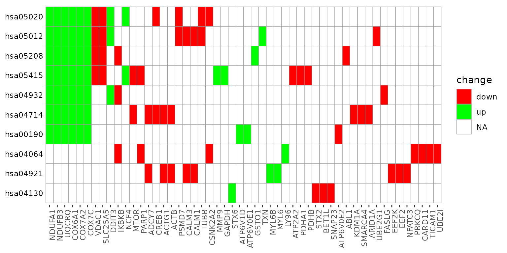
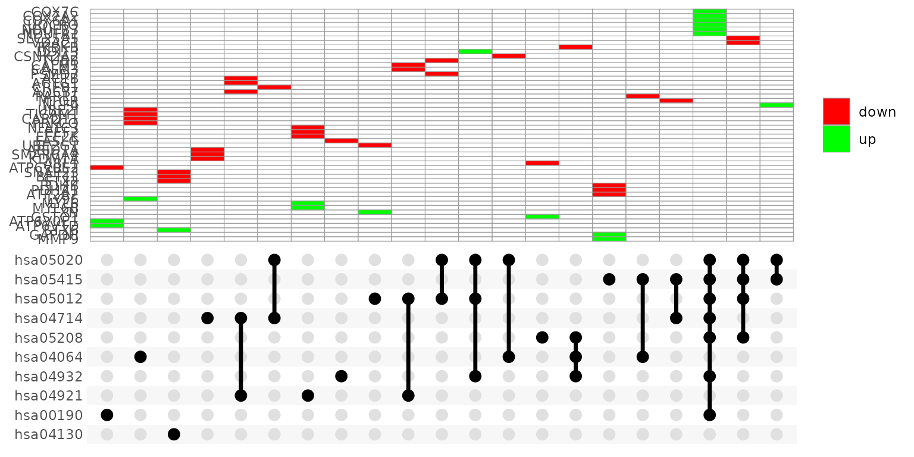

Visualization of pathfindR Enrichment Results
2020-02-20
Source:vignettes/visualization_vignette.Rmd
visualization_vignette.RmdpathfindR offers various functionalities to visualize the enrichment results. In this vignette, I try to demonstrate these functionalities.
enrichment_chart(): Bubble Chart of Enrichment Results
enrichment_chart generates a bubble chart. The x-axis corresponds to fold enrichment values while the y-axis indicates the enriched terms. Size of the bubble indicates the number of significant genes in the given enriched term. Color indicates the -log10(lowest-p) value. The closer the color is to red, the more significant the enrichment is.

By default, the bubble chart is generated for the top 10 terms. This can be controlled by the top_terms argument:


If the enrichment results were clustered, setting plot_by_cluster == TRUE will result in the enriched terms to be grouped by clusters:

See ?enrichment_chart for more details.
term_gene_heatmap(): Terms by Genes Heatmap
term_gene_heatmap() is used to create a heatmap where rows are enriched terms and columns are involved input genes. This heatmap allows visual identification of the input genes involved in the enriched terms, as well as the common or distinct genes between different terms.

By default, the heatmap is generated for the top 10 terms. This can be controlled by the num_terms argument:


By default, the term ids are used. For using full descriptions, set use_description = TRUE

If the input data frame (same as in run_pathfindR()) is supplied, the tile colors indicate the change values:
term_gene_heatmap(RA_output, RA_input, use_description = TRUE)
#> Number of genes provided in input: 572
#> Number of genes in input after p-value filtering: 572
#>
#> Could not find any interactions for 11 (1.92%) genes in the PIN
#> Final number of genes in input: 561
See ?term_gene_heatmap for more details.
term_gene_graph(): Term-Gene Graph
The function term_gene_graph() (adapted from the Gene-Concept network visualization by the R package enrichplot) can be utilized to visualize which significant genes are involved in the enriched terms. The function creates the term-gene graph, displaying the connections between genes and biological terms (enriched pathways or gene sets). This allows for the investigation of multiple terms to which significant genes are related. The graph also enables determination of the degree of overlap between the enriched terms by identifying shared and/or distinct significant genes. By default, the function visualizes the term-gene graph for the top 10 enriched terms:

To plot all of the enriched terms in the enrichment results, set num_terms = NULL (not advised due to cluttered visualization):

To plot using full term names (instead of IDs which is the default), set use_description = TRUE:
term_gene_graph(RA_output, num_terms = 3, use_description = TRUE)
#> Using `stress` as default layout
By default the node sizes are plotted proportional to the number of genes a term contains (num_genes). To adjust node sizes using the \(-log_{10}\)(lowest p values), set node_size = "p_val":

See ?term_gene_graph for more details.
UpSet_plot(): UpSet Plot of Enriched Terms
UpSet plots are plots of the intersections of sets as a matrix. UpSet_plot() creates a ggplot object of an UpSet plot where the x-axis is the UpSet plot of intersections of enriched terms and the main plot is a bar plot of the number of genes in the corresponding intersections (default).

Again, you may change the number of top terms plotted via num_terms (default = 10):

Again, to plot using full term names (instead of IDs which is the default), set use_description = TRUE:

If genes_df is provided, then the main plot displays the boxplots of change values of the genes within the corresponding intersections:
UpSet_plot(RA_output, RA_input, use_description = TRUE)
#> Number of genes provided in input: 572
#> Number of genes in input after p-value filtering: 572
#> Could not find any interactions for 11 (1.92%) genes in the PIN
#> Final number of genes in input: 561
See ?UpSet_plot for more details.